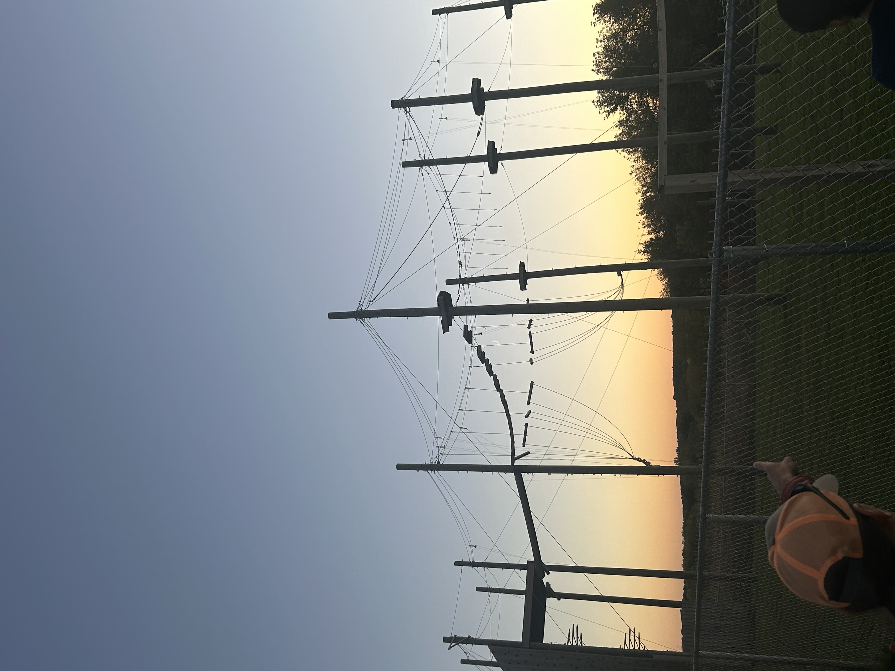
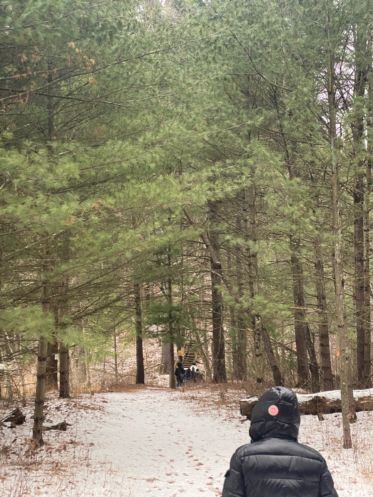

Getting Started
Use the navigation menu above to explore staff manuals and resources. This webiste will serve as a central hub for everything related to ALPs staff training and operations. Your ancestral ALPsters have put a great deal of time and effort into putting position specific instructions together for a variety of topics.

